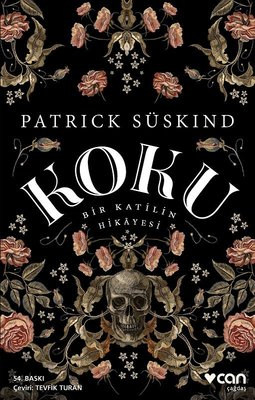

KOKULARIN EŞSİZ GÜCÜ!
Bir arkadaşımla konuşurken ona kokulardan bahsediyordum. İnsanlarla ilk karşılaşmamızda “kanım ısınmadı”, “çok cana yakın buldum”, “çok hanımefendi” ya da “çok beyefendi biri” gibi ifadeler kullanmamızın altında yalnızca o kişinin beden dilinden gelen mesajların ya da konuşmalarının değil aynı zamanda yaydığı kokunun da etkisinin olduğunu anlatıyordum. Görüşümü desteklemek için de köpeklerden örnek veriyordum. Canlılar arasında koklama duyusu en gelişmiş varlığın köpekler olduğunu, eğer bir köpek gördüğümüzde korkarsak ona göre koku yaydığımızı ve köpeğin bize saldırdığını; korkmaz da cesaretli davranırsak da yaydığımız koku nedeniyle köpeğin bize saldırmadığını söylüyordum.
Arkadaşım da bana “Patrick Süskind’in ‘Koku’ diye bir kitabı var hiç duymuş muydun?” diye sordu. Ben de ona “duymadığımı” söyledim. O zaman “Önce kitabı okumanı, ardından da filmi var, filmini seyretmeni tavsiye ederim” dedi. Doğrusu Süskind’in kitabını okuyana kadar kokularla ilgili genel bir bilgim vardı. Kitabı okuyunca bu bilginin ne kadar da yüzeysel olduğunu gördüm. Zira Süskind, kitabında kokuyu ve kokunun insanlar üzerindeki etkisini kahramanı Jean Baptiste Grenouille’nin hikâyesi üzerinden bütün detaylarıyla anlatıyor bizlere. Grenouille, annesiz ve babasız olarak tüm insani duygulardan yoksun olarak büyüyor. O, aşk, sevgi, merhamet, acımak, başkalarını düşünmek gibi hiçbir duyguya sahip değil. Kendisinin bir insan gibi kokmadığını anladığında adeta dünyası yıkılıyor. Ancak sahip olduğu muhteşem koku alma duyusu sayesinde koku üreterek insanlara kendisini kabul ettirmeyi başarıyor.
Süskind, kitabın arka planında kokunun yalnızca insanlar üzerindeki etkisini değil, aynı zamanda toplum tarafından dışlanan bir insanın kendini var edebilme ve topluma kabul ettirebilme adına neleri göze alabileceğini de anlatıyor. Öyle ki kitabı okuyup bitirdiğinizde doğduğu anda terk edilmiş, hiçbir sevgi ve şefkat görmemiş, reddedilmiş, umursanmamış, insan yerine konmamış bir çocuğun psikolojisini çok daha iyi anlıyorsunuz. Böyle çocukların toplum normlarının dışına çıkarak yine topluma nasıl zarar verebileceğini daha iyi kavrıyorsunuz. Yaşanan birçok sorunun temelinin dönüp dolaşıp aile ve topluma dayandığına bir kez daha şahit oluyorsunuz.
Hepimizin bildiği gibi beş duyu organımız olmasına rağmen daha çok görme ve işitme duyularımızın işlevi aklımıza gelir. Koklama duyumuzun çoğu zaman farkına bile varmayız. Hele hele kokuların insanlar üzerindeki etkisi çoğu zaman aklımıza bile gelmez. Kitap, bu yönüyle koklama duyumuzun en az diğer duyularımız kadar hayati bir öneme sahip olduğunu hatırlatıyor ve müthiş bir farkındalık kazandırıyor. Kitabı okurken anlatılanlardan öyle etkileniyorsunuz ki hafızanızdaki koku arşivinizin dehlizlerinde dolaşmaya başlıyorsunuz. Sıcak ekmeğin kokusu, toprağın kokusu, bahar ayında çiçeklerin kokusu, ormanda ağaçların kokusu, denizin kokusu, annenizin kokusu, sevgi ve şefkatin kokusu, dostluk ve arkadaşlığın kokusu burnunuzda tütmeye başlıyor.
Aynı zamanda beyaz perdeye aktarılan, 18. yüzyıl Fransa’sının ekonomik, sosyal ve kültürel hayatına da ışık tutan ve sürükleyici bir olay örgüsüne sahip bu eseri tüm okurlara mutlaka okumalarını tavsiye ederim. Yalnız filmini kitabı okuduktan sonra seyretmenin daha yararlı olacağını belirtmeliyim. “Kokuların öyle bir inandırıcılığı vardır ki, sözden, gözle görmekten, duygudan, iradeden daha güçlüdür” ifadesinin ne anlama geldiğini merak eden okurlara…